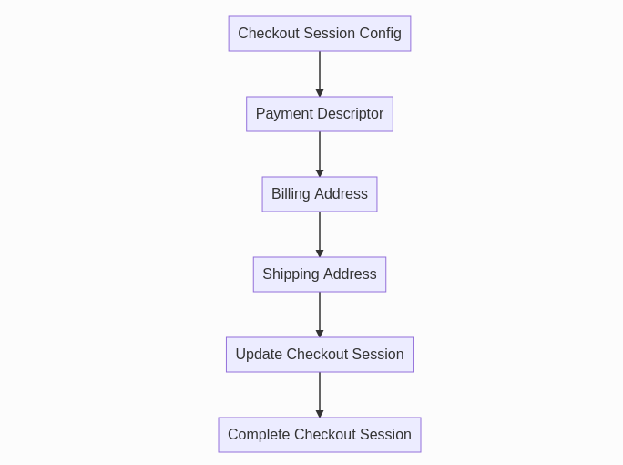

Frontend Customisation¶
Support for Progressive Web Apps/Headless Commerce/Single Page Applications¶
The module exposes the REST endpoints that needs to set up. You can find them here. The front-end needs to be setup by the merchant/developer.
Notes on the Checkout Session API¶
The Checkout Session API exposes a number of endpoints to manage active Amazon checkout sessions associated with an active cart in a Magento store. Available endpoints include functionality such as retrieving configuration information used to generate an Amazon Pay button, retrieving shipping addresses associated with an Amazon account, and updating a checkout session by setting payment/shipping/billing information, etc.
The following flowchart illustrates the sequence in which these calls may be made through a normal shopping/checkout flow:
Checkout Session Config¶
Values returned from this endpoint will be needed to generate the Sign In with Amazon and Amazon Pay buttons. The format of this response will be:
[
{
"merchant_id": string,
"currency": string,
"button_color": string,
"language": string,
"sandbox": boolean,
"login_payload": string,
"login_signature": string,
"checkout_payload": string,
"checkout_signature": string,
"public_key_id": string,
"pay_only": boolean
"paynow_payload": string,
"paynow_signature": string
}
]
Note
The value for productType returned in the response will be a boolean value indicating whether the product is PayOnly; true for PayOnly, false for PayAndShip.
- A Sign In With Amazon Button, see Amazon Sign-in (Render the Button).
- An Amazon Pay Button, see Add the Amazon Pay Button (Render the Button).
Shipping and Payment Information¶
The Shipping Address, Payment Descriptor, and Billing Address endpoints are used to retrieve order summary information to display upon checkout review. Shipping and payment method updates can be enabled to allow the user to choose a different shipping address or payment instrument before placing an order.
Note
The value for shippingAddress should be null for PayOnly product types. Similarly, billingAddress should only be populated in EU or for PayOnly product types.
For recommended best practices regarding displaying this information, see Display shipping and payment info (Best Practice).
For a guide on enabling shipping and payment information updates at checkout review, see Enable shipping and payment updates.
Configurable URLs¶
In order to provide more control over redirects from Amazon during the checkout process, several configuration options are available to define locations for checkout session logic in a headless implementation. See the URL options in Developer Options for a description of the configurable locations.
An example sequence of how these redirects may be used looks like the following:
- Amazon Pay button is rendered at checkout page
- User authenticates through Amazon and is redirected to Amazon Checkout Review Return URL with an amazonCheckoutSessionId in the query string
- Sign user in to Magento store, then redirect to Magento Checkout URL Path with amazonCheckoutSessionId in the query string
- Use checkout session ID and checkout session API endpoints to set/display shipping information and payment descriptor
- User places order, call the checkout session API /update endpoint; a processing URL is returned
- Redirect user to processing URL, and Amazon redirects user to Amazon Checkout Result Return URL
- Call checkout session API /complete endpoint, and redirect user to Magento Checkout Result URL Path upon success
Sign in with Amazon¶
The module exposes two REST endpoints that enable Sign in with Amazon for headless implementations.
Configuration¶
The configurable URL Sign In Result URL Path defines a location where your implementation should be able to handle an authentication response from Amazon. By default, this location is amazon_pay/login/authorize.
Note
The configuration value for Enable Amazon Sign-in must be set to Yes in order to receive successful responses from the sign in endpoint.
Usage¶
The redirect to the Sign In Result URL will include a buyerToken as a parameter in the URL. This buyerToken can be used in a request to /V1/amazon-checkout-session/signin/{buyer-token} which will return a response similar to:
[
{
"success": true,
"customer_id": 201,
"customer_firstname": "Susie",
"customer_last": "Smith",
"customer_bearer_token": "0wjzxdjnaus5dxdy9qwz2kgp9poftu1u"
}
]
Customer Already Exists¶
In the case that a Magento store customer already exists with the same email address that was used to sign in through Amazon, another endpoint is provided in order to link the Amazon customer with the store customer. If this happens, the response from the sign in endpoint will look similar to:
[
{
"success": false,
"customer_email": "customer@amazon.com",
"message": "A store account for this email address already exists. Please enter your store account password to log in without leaving the store."
}
]
{
"buyerToken": "eyJ6aXAiOiJERUYiLCJl...HCGVKINr557b2hxk77webg",
"password": "supplied_password"
}
A successful response will look similar to a success response from the sign in endpoint.
Swagger Documentation¶
Detailed documentation on available endpoints, their usage, and request/response bodies can be found here.
Rendering Amazon Buttons in a Custom Location¶
You may wish to display an Amazon Pay button somewhere other than the default options (cart, minicart, checkout, or with payment methods). A recommended solution is loading the amazon-button.js script in a custom block/template similar to how the module renders the minicart button:
<div id="PayWithAmazon-Cart"
class="amazon-checkout-button"
data-loaded-at="<?= $block->escapeHtml(time()) // added for force re-rendering ?>"
data-mage-init='{"Amazon_Pay/js/amazon-button": {"hideIfUnavailable": ".amazon-button-container"}}'>
</div>
See the minicart button template in the module repository for a full example.
Simlarly, if you wish to add an Amazon Sign In Button somewhere other than the login page, you can do so using the same method:
<div class="amazon-sign-in-button-container">
<div class="amazon-sign-in-button-container__cell">
<div id="AmazonPayButton"
class="login-with-amazon"
data-mage-init='{"amazonPayLoginButton": {}}'>
</div>
</div>
</div>
Be sure that your block class/layout files check to make sure the module is active, and the Enable Amazon Sign-In setting is set to Yes before rendering. Refer to this gist for a more complete example.